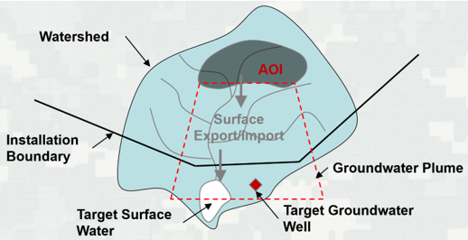
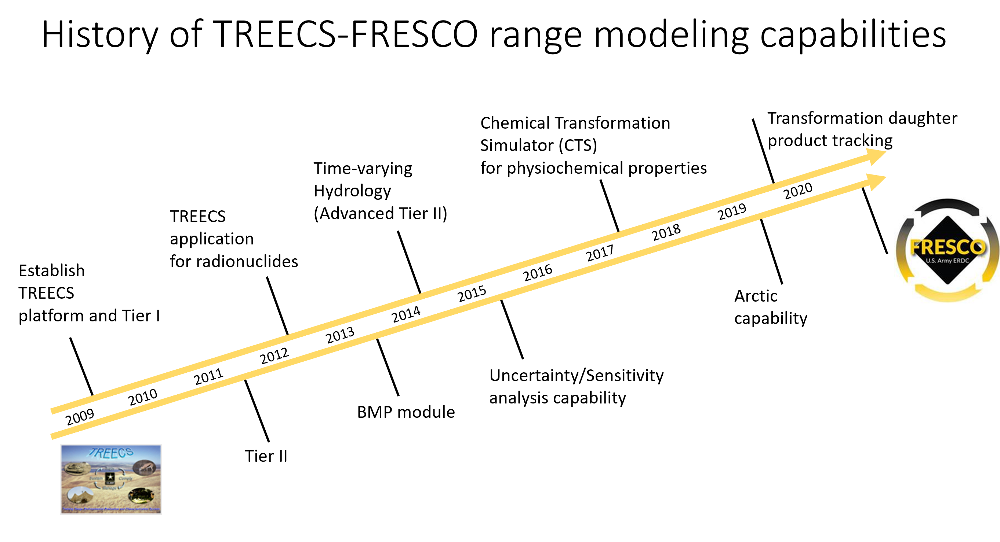

-
Welcome to FRESCO™
Welcome to the U.S. Army Engineer Research and Development Center's (ERDC) Fate and Risk Evaluation System for Contaminants
(FRESCO™) website. FRESCO™ is a multimedia modeling tool designed to help DOD training ranges operate sustainably.
FRESCO is a platform for multimedia modeling of chemical hazards, estimating exposures, and screening for human and ecological
health risks.

-
The purpose of this of website is to facilitate information exchange with FRESCO™ users. In addition to the latest FRESCO download
package it also host user and application documentation, training materials, Frequently Asked Questions, and other useful links.
-
FRESCO’s Roadmap to Delivering Better Decision Support
TREECS™ and ARAMS™ assessments have been used to determine management strategies for a wide array of military and
civilian firing ranges, allowing these areas to be operated as a manageable resource. FRESCO™’s initial release
in 2020 Q4 (version 0.1) will provide access to the same powerful modeling tools as the latest (version 6.1)
release of TREECS™ and will shortly be followed by FRESCO™ version 1.0 (2021 Q1), with improved management of
screening level and exposure risk data along with updates to the user interface. FRESCO™ version 2.0 (2021 Q3)
will incorporate the latest contaminant characteristic data and provide additional modeling options and
documentation.

The Fate and Risk Evaluation System for Contaminants (FRESCO™) was developed for the Army with varying levels of capability to forecast the fate of and risk from contaminants and munitions constituents (MC), such as high explosives (HE) and metals, within and down-gradient from firing/training ranges to surface water and groundwater. The overall objective is to provide environmental specialists with tools to assess the potential for migration of MC into surface water and groundwater systems and to assess range management strategies to protect human and environmental health. FRESCO™ is robust enough to also be used to assess fate and risk of contaminants not associated with military activities.